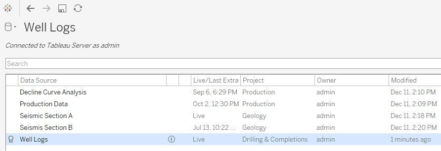

Tableau Well Logs
consolidating .las files into a single source of truth for data visualization

Working as a Product Consultant for Tableau I was brought in to assist an E&P customer who had a particular set of requirements they needed to address with a BI solution. They were looking for a user-friendly data portal that supported a deeper self-service model and that was flexible enough from a visual standpoint to allow users to modify not only how data was displayed but also integrate the aesthetic of their content into a coherent company standard. Obviously we were a great fit for this project however the drilling department wanted to ensure that we had the ability to work with well logs and seismic data. We did not have any materials to share right away so I had to build a proof of concept for them. Before joining the Tableau team I worked for a drilling company for two and a half years. I also grew up hearing about the upstream business my entire life so needless to say I was absolutely thrilled by this challenge. My answer to the first request will be covered in this post. The latter request will be the subject of a future blog post - so stay tuned!
Well Logs: what are they?
 To keep it simple well logs consist of data that is collected from a well in order to understand downhole geology or physical characteristics of the well itself. They are of critical importance for drilling departments everywhere and in fact Schlumberger, the largest oilfield services company in the world as of 2018 got its start by recording the first-ever electrical resistivity well log in Merkwiller-Pechelbronn, France in 1927.
To keep it simple well logs consist of data that is collected from a well in order to understand downhole geology or physical characteristics of the well itself. They are of critical importance for drilling departments everywhere and in fact Schlumberger, the largest oilfield services company in the world as of 2018 got its start by recording the first-ever electrical resistivity well log in Merkwiller-Pechelbronn, France in 1927.
However life is not simple. If you are interested in this subject I offer more background information in this section about how and why this data is collected.
The PetroWiki defines well logs with sufficiently thorough explanations. For a quick glance you can refer to the image on the right. This image is sourced from the Petroleum Engineering Handbook (ISBN 978-1-55563-120-8). It organizes the different types of logs according to subsurface properties and logging tools. Basically you have different logs for open holes which are performed before casing has been run and logs that are performed on a cased hole (steel pipe casing has been run downhole) see reference. The middle ring describes the different properties that can be measured while the inner and outer rings indicate the logging tools that are used for that purpose. Some of these logs are evaluated in real-time to provide crucial operational data to drilling engineers as is the case with LWD (logging while drilling) and MWD (measurements while drilling) logs. They may then be stored for future analysis as is the case of this post's example.
So many potential use cases! You can click on the image to learn more about it or to zoom in.
The always useful and very concise Schlumberger Oilfield Glossary defines well logs as follows:

1. n. [Formation Evaluation]
The measurement versus depth or time, or both, of one or more physical quantities in or around a well. The term comes from the word "log" used in the sense of a record or a note. Wireline logs are taken downhole, transmitted through a wireline to surface and recorded there. Measurements-while-drilling (MWD) and logging while drilling (LWD) logs are also taken downhole. They are either transmitted to surface by mud pulses, or else recorded downhole and retrieved later when the instrument is brought to surface. Mud logs that describe samples of drilled cuttings are taken and recorded on surface.
However it also has this to say:
2. n. [Formation Evaluation]
The display of one or more log measurements on a strip of paper or film (a hard copy) with depth in one axis. In this sense, the term refers to the display not only of the measurement but of other relevant information. A typical log is presented on folded paper of indeterminate length, but about 8.5-in. [21.5-cm] wide. It consists of a heading, well sketch, logging tool sketch, insert, main log, repeat section and tail. When the term is used in this sense, each log measurement is usually referred to as a curve.
Now as a Tableau guy this is just plain funny to me. I have seen logs before and back then I never thought twice about how this information was displayed, stored and used. I am sure the old fashioned way "just works" but honestly the line stating the required "folded paper of indeterminate length" just seems outdated. You mean that I can't slice and dice? I can't filter out any noise so I can focus on what is relevant to me? I can't easily compare different wells with each other without taking a field trip to the office printer? Next you're going to tell me what type of paper to use, the font size and typeface...I wouldn't be surprised.
Note: I am fully aware that modern methods to display well logs do exist, however in many cases they still lack the flexibility that can be achieved with a proper BI technology. I will also use this funny definition as a narrative device so just move on to the next chapter.
Anyways visualizing well logs in Tableau seemed like an awesome challenge to me. This is how I did it:
LAS Files
Now this may be exciting and all but there is tiny little problem in our way. Well logs are usually available as Log ASCII Standard File Formats standardized by the Canadian Well Logging Society or otherwise known as .las files.
In other words you can't just drop them on Tableau Desktop right away to start exploring. First they need to be converted into a friendly format for analytics like a .csv file. Look at the image on the left for a sample .las file. A bunch of headers at the top. No columns or rows. Finally the actual curve data starts at line 43 after a note describing some sort of tool failure. Wouldn't it be nice to separate this information so one could analyze the curves and only bring in header metadata when necessary? It would also be nice to do this faster than a quick coffee break. No bigly, there are plenty of choices out there to get this done. Personally I feel most comfortable using Python. People working for companies that use well logs regularly should have access to software that easily exports these files to other formats.
I found a nifty package as I was searching the web for an open source solution to this problem: lasio. The package reads and writes .las files and is compatible with versions 1.2 and 2.0 of the standard. It provided for a very easy way to convert multiple files into something I could connect to. For this exercise I converted 165 .las files in less than 15 minutes using the las2excelbulk script. You can refer to the package documentation if you want to learn how to export these types of files.
This is basically how the script works:
(py36) C:\Windows\System32>las2excelbulk --help
positional arguments:
path
optional arguments:
-h, --help show this help message and exit
-g GLOB, --glob GLOB Match LAS files with this pattern (default: *.las)
-r, --recursive Recurse through subfolders. (default: False)
-i, --ignore-header-errors
Ignore header section errors. (default: False)
If you want to export multiple .las files contained in a single folder (test_folder) to excel simply type this command:
(py36) C:\Users\testuser\Documents\folder\>las2excelbulk --recursive test_folder
Tableau Prep
Now that I have successfuly exported my .las files into excel spreadsheets my next task is to do some data wrangling so that I consolidate them into a data model that will allow me to visualize these curves in my flexible analytics software of choice. I used Tableau Prep for this step as it is perfect for combining and shaping datasets such as this. I have used this product plenty of times and I truly enjoy it. Count me as a fan. Some of you may have noticed but the headline image for this post is the actual Tableau Prep Flow that I built for this project. Anyways here it goes again:
Intentionally looking like a subway map, the idea is to start from the left and end at the right. All of the colored objects on the left are spreadsheets containing the log curves I had exported. The first step is to Union these files or combine them into a single dataset assuming a consistent structure such that for each new log it simple adds new rows and differentiates between wells using an auto-generated "table name" column. I then clean up this union to keep nice names for each well. Next I Pivot all of the curves so that there is a new column containing the values and another column declaring which mnemonic it corresponds to (the abbreviated type of log). This will be useful later so that I can combine these rows with the useful header metadata you had seen previously. After Cleaning and changing Data Types for the curve data I bring in the header file containing useful information about each curve. I then Join the two datasets using the curve mnemonic as the join clause. Before Publishing the final datasource to Tableau Server, I perform some final cleaning to remove any unneeded fields.

The above pictures my published datasource all hot and fresh, ready for analytics heaven!
Tableau Desktop
Ok so all of the above was a build up to this: being able to use consolidated well log data in Tableau Desktop. From here onwards users should be able to access this data easily and use it to incorporate well logs into their dashboards, reports and to analyze curves at specific depths or across wells. It really opens up this valuable dataset to the rest of the organization and is way cooler than a folded paper of indeterminate length. Drilling Engineers and Geologists (who are highly technical btw) will no longer need to learn scripting skills for them to use this information in a modern analytics environment, just drag and drop baby!
Here are a few iterations:
Well Logs can complement a dashboard as in this example where well specific data is displayed on hover via a tooltip:
Now certainly these iterations may break with convention but that's just a matter of building a dashboard to suit your needs, what is important here is taking this resource into a modern analytics platform that is accesible to the rest of the organization. It is also important to have fun.
This post has served its purpose as a general walkthrough for visualizing Well Logs in Tableau. In the future I plan to post an embedded visualization of a well log report for you to explore.